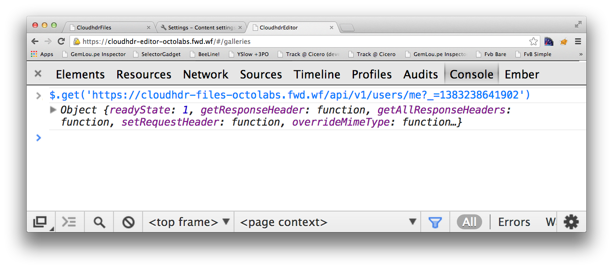
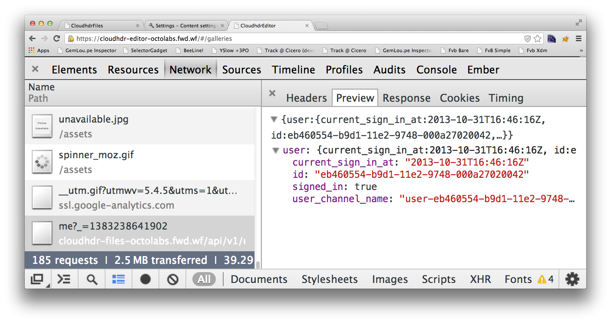

Ember & SOA
Ember & SOA
Stumbling towards SOA
The story of CloudHDR

Outline
- Context, Goals & Requirements
- First Steps
- Authenticaion
- Leaving
localhost
A bit about me |
|
Jeremy Greendrummer, coder, entrepreneur, photographer, brewerorganizer of OkcRuby.org |
|

|
@jagthedrummer jeremy@octolabs.com http://www.octolabs.com/ |
CloudHDR
HDR Photo Processing Automation
HDR == High Dynamic Range
Why HDR?
You don't want this:

You want this!
Goals & Reqs
Goals & Reqs
- Small focused apps
- Single sign on/off
- Minimize code duplication
- Support a variety of app/service types
- Friendly to people and robots
Getting Started
Getting Started
Start a local service
$ rails -p 3007
Configure Ember Data
// Configure Ember Data
App.ApplicationAdapter = DS.RESTAdapter.extend({
host: 'http://localhost:3007'
});
Better than hard coding
$ export FILE_SERVICE=http://localhost:3007/
// Configure Ember Data
App.ApplicationAdapter = DS.RESTAdapter.extend({
host: '<%= ENV["FILE_SERVICE"]%>',
namespace: 'api/v1'
});
Proceed as normal
- Routes
- Controllers
- Models
- Components
- Etc...
Congratulations!
You're "doing SOA"!
Authentication
Authentication

OAuth(2)

An open standard for delegated authorization
A Brief Intro
Or Review
Ember + OAuth
Session Based Auth
Code for the Ember app
- Retrieve some data
- Handle authorization errors
Just get the current user when the app is ready
App = Ember.Application.create({
ready: function(){
var store = App.__container__.lookup('store:main');
var id = 'me?_=' + (new Date()).getTime();
store.find('user',id).then(function(user){
App.currentUser = user;
});
}
});
Custom 401 error handler
App.ApplicationAdapter = DS.RESTAdapter.extend({
ajaxError: function(jqXHR) {
var error = this._super(jqXHR);
if (jqXHR && jqXHR.status === 401) {
var newLocation = "http://files.cloudhdr.com/auth?return=";
newLocation += encodeURIComponent(document.location.toString());
document.location = newLocation;
} else {
return error;
}
}
});
Token Based Auth*
*I have not actually implemented this yet
Leaving localhost
Leaving localhost
Cross domain issues
Cancelled in the browser
200 OK on the server
Check the console
CORS
Cross Origin Resource Sharing
Allows a site to tell browsers
that it is willing to
provide content/services to other sites
# Gemfile
gem "rack-cors", :require => "rack/cors"
# config/application.rb
config.middleware.use Rack::Cors do
allow do
origins(/http:\/\/localhost:\d*/,
/https:\/\/cloudhdr-\w*-octolabs\.fwd\.wf/,
/http:\/\/[\w-]*\.cloudhdr\.com/
)
resource '/api/v1/*',
:headers => :any,
:methods => [:get, :post, :put, :delete, :options]
end
end
Public/Open API
# config/application.rb
config.middleware.use Rack::Cors do
allow do
origins('*')
resource '/api/public/v1/*',
:headers => :any,
:methods => [:get]
end
end
Do NOT Do This!
# config/application.rb
config.middleware.use Rack::Cors do
allow do
origins('*')
resource '*',
:headers => :any,
:methods => [:get, :post, :put, :delete, :options]
end
end
Learn about Cross Site Scripting!
The AJAX Cookie Problem
by default
jQuery
does not
send cookies
with AJAX requests
withCredentials to the rescue!
// send cookies with AJAX requests
$.ajaxPrefilter( function( options, originalOptions, jqXHR ) {
options.xhrFields = { withCredentials : true };
});
Yay!
Yay!
Wrap Up
Wrap Up
- Understand your requirements
- Set up authentication
- Get ready for deployment
- Enjoy your SOA!
Thanks For Watching!
|
@jagthedrummer jeremy@octolabs.com |
|